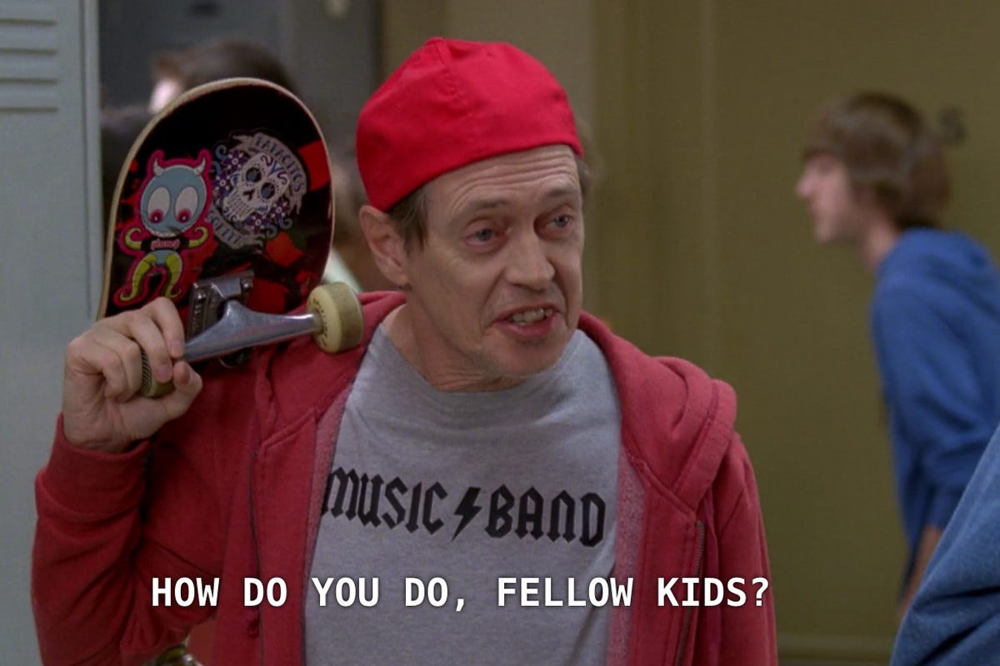
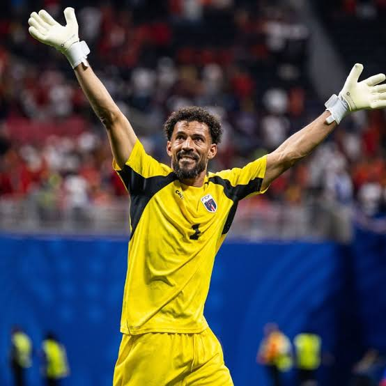
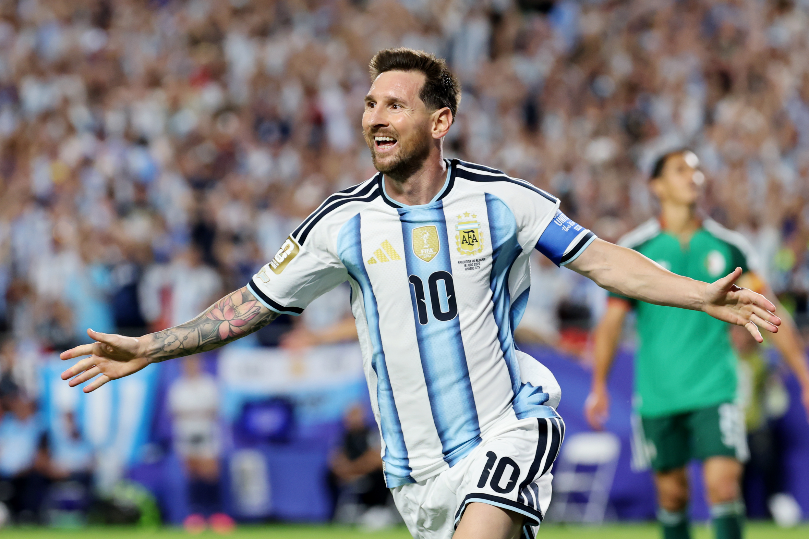
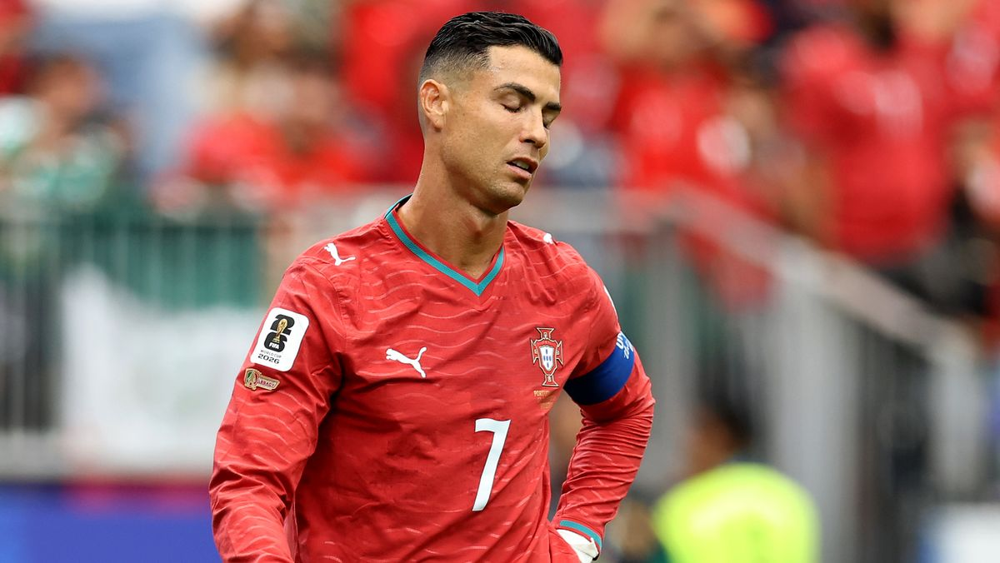
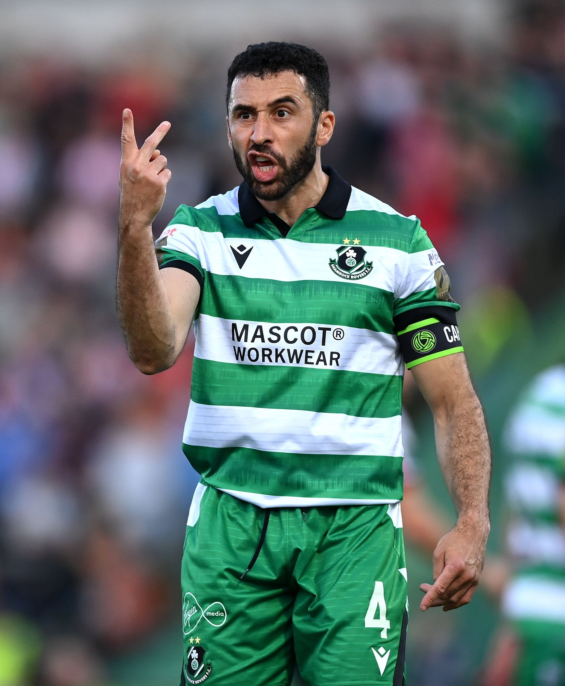
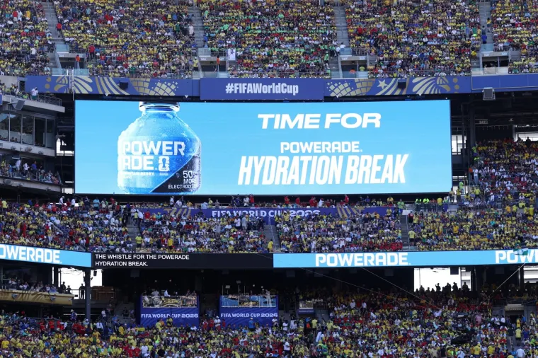
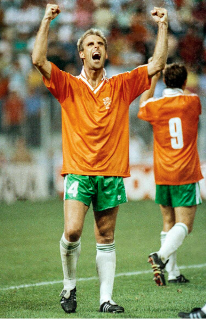
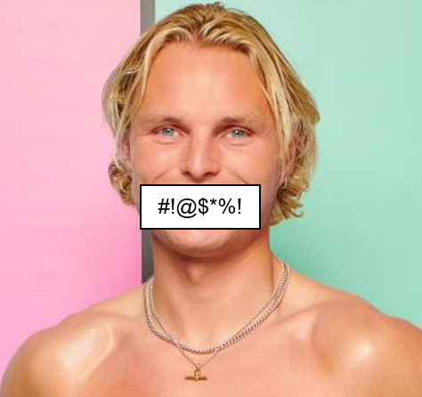
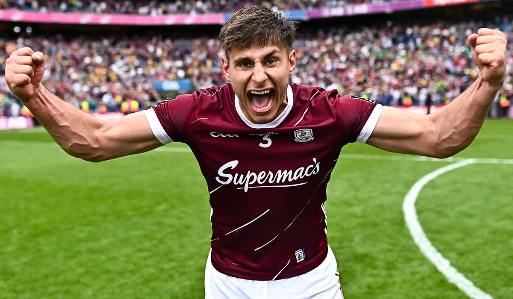
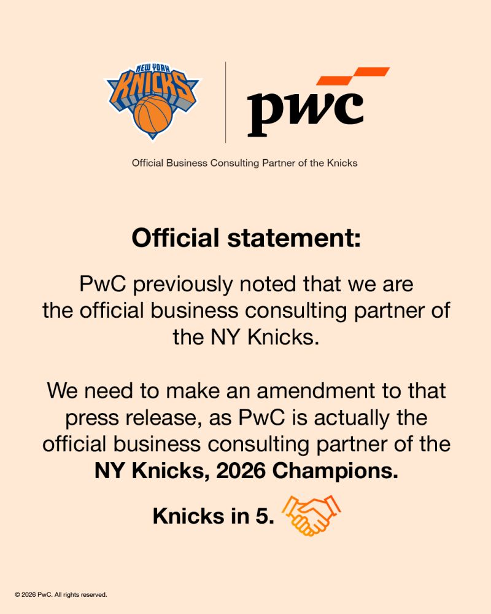

Did you miss us?
⚽ Football Lingo To Help You Fit In

We heard some of you were struggling with the football lingo, don't worry we've got you covered!
“The passing was good, but they lacked clinical finishing.”
Translation: Nobody scored and it was incredibly boring.
“They really miss their holding midfielder.”
Translation: I have no idea who is playing, but this makes me sound like a genius.
“The referee has completely lost control of this match.”
Translation: Type this in all-caps whenever anyone gets a card. Works 100% of the time.
🧤 Hand of Voz

Goalkeeper Vozinha, age 40, made seven saves. The match made him a global viral figure after a heroic clean sheet and an Instagram jump from roughly 40–50k followers to nearly 12 million. For context, Cape Verde’s population is only around 600,000.
💬 Quote of the Week
“That will quieten down Harry Kane now won’t it!”
— Oisin’s Mother, after Croatia scored their second goal against England
Croatia went on to lose 4–2. Think she may have spoken a little too soon.
🐐 Things are getting Messi

Just in case anyone thought age, pressure, or the general passage of time might slow him down, Lionel Messi opened his World Cup with a hat-trick for Argentina and reminded everyone that he is, unfortunately for the rest of the planet, still ridiculous at football.
At 39, most players are being wheeled into punditry gigs, charity matches, and awkward brand partnerships. Messi, on the other hand, is still out here deciding World Cup games as if this is all mildly inconvenient for him but manageable.
There is something deeply unfair about the fact that even when everyone knows exactly what he wants to do, nobody can seem to stop him doing it. Left foot, right place, same story. Three goals, three reminders, and one message to the rest of the tournament: he is not here for a farewell tour, he is here to win things.
Argentina fans will now be fully convinced this is destiny, neutrals will pretend not to be enjoying it, and defenders everywhere will be updating their LinkedIn profiles.
👀 Ronaldo Watch

Cristiano Ronaldo has arrived at yet another World Cup, still carrying himself like the main event despite the growing evidence that the game may have moved on without him. At this stage, watching Portugal often feels like watching 10 players try to build an attack while one man prepares himself to take credit for it.
The running is less frequent, the free kicks are still wildly optimistic, and every missed chance is followed by the sort of facial expression usually reserved for genuine personal betrayal. Whether this ends in one final headline moment or another collection of free kicks buried in the wall, Ronaldo will no doubt make sure the whole tournament somehow revolves around him.
Nation Spotlight: Cape Verde

Famous Footballer: Pico Lopes
National Dish: Cachupa
Weird Fact: Cape Verde is an island nation made up of 10 volcanic islands in the Atlantic Ocean.
Spirit of Choice: Grogue
World Cup Chances: ⭐⭐⬛⬛⬛
Pico Lopes: From LinkedIn message to World Cup hero
One of the best stories of this World Cup is Roberto “Pico” Lopes, the Shamrock Rovers centre-back who helped Cape Verde shut out Spain in one of the shocks of the tournament. Lopes, who was born in Dublin to a Cape Verdean father and an Irish mother, has built his reputation in Irish football and has long been one of Shamrock Rovers’ most reliable defenders. Against Spain, he was right at the heart of Cape Verde’s resistance, making key blocks and clearances as they earned a famous 0-0 draw in their first-ever World Cup match.
What makes his rise even better is how unlikely it was. Before becoming a full-time footballer, Lopes worked in banking in Dublin, and his path into international football began with a message on LinkedIn from Cape Verde’s national team setup. The first approach was in Portuguese, so he assumed it was spam and ignored it. Months later, a follow-up in English made him realize it was genuine, and that message ultimately changed his career. He debuted for Cape Verde in 2019, and now he’s gone from League of Ireland stalwart to one of the standout names of this World Cup.
💧 Water Break or Ad Break?

Water breaks in climate-controlled stadiums are a bit of a farce if you ask us. What should be a sensible player welfare measure has increasingly turned into a three-minute disruption that pulls viewers out of the match and hands broadcasters a perfectly packaged advertising slot.
Instead of adding anything to the spectacle, they often kill momentum, disconnect fans around the world from the football, and give managers a convenient window for an unofficial tactical timeout. It feels less like a necessary pause and more like a scheduled commercial opportunity with a team talk thrown in.
To make matters worse, some networks have already broken FIFA'S rules by returning to coverage after play had already resumed, which rather defeats the purpose of broadcasting the match in the first place.
🏆 Italia ’90 – The Golden Run
Quarter-finals (best ever finish)

Ireland’s first-ever World Cup ended in unforgettable fashion.
They progressed from the group stage with three draws (vs England, Egypt, Netherlands).
In the Round of 16, they beat Romania on penalties (5–4) after a 0–0 draw — one of Irish football’s most iconic moments.
The journey ended in the quarter-finals with a narrow 1–0 loss to host Italy.
👉 Notably, Ireland reached the quarter-finals without winning a match in 90 minutes, an unusual World Cup record.
🔥 The Fire Pit
Ciao George

More news has come out about George Knight’s sudden disappearance from the villa. Whilst the family emergency appears to have been genuine, it also seems ITV producers had already warned him over “unacceptable language” before he was ultimately removed.
The whole thing has strong Sherif-from-Season-5 energy: a quiet exit, minimal explanation, and everyone left to piece it together afterwards.
Innocent Bystander or Master Puppeteer?

Galway’s very own Séan Fitzgerald has seemingly had a quiet, unproblematic ride so far in the villa. However, it has not gone unnoticed that Fitzy seems to be “egging” on the bad behaviour of some of his fellow bachelors. He has been convincing them to act on their impulses, and this seems to have trickled down to his “disciples”.
These so-called Fitzy Disciples convinced Simba to act in the heat of the moment and got him to pull Mica for a chat right after his tiff with Angelista. I’d be keeping an eye on the Galway man’s antics. For now though, he seems to be getting on well. Even Love Island’s very own Iain Stirling doesn’t have a bad word to say about Fitzy.
🌍 This Week’s Other Important Developments
Low-key genius advertising by Levi’s.
Once again, the Japanese fans are being talked about for their incredible stadium etiquette. They honestly leave most stadiums cleaner than before they arrived. Huge respect both on and off the field.
Oh yeah, and the Knicks won!!!, shoutout to PwCUS

🧠 Trivia
Some lightning quick answering last week... very sus 🤨
IMPORTANT: We have decided going forward whoever answers the quiz the quickest will be the Winner!🎁
May the odds be ever in your favor
- Which "Striker" are the R&D Team hoping to sign?
- When is the Love Island Final?
- What Irish team does Pico Lopes play for?
Submit your answers here.
Please answer with integrity and honesty...
*Prizes TBD
If you have any issues with the form, you can also use this link.
⏱️Full-Time Whistle
As always, we’re trying to improve from week to week, so if you have feedback on the newsletter, the website, or any of the completely serious journalism above, we’d love to hear it.
Send us your feedback here.